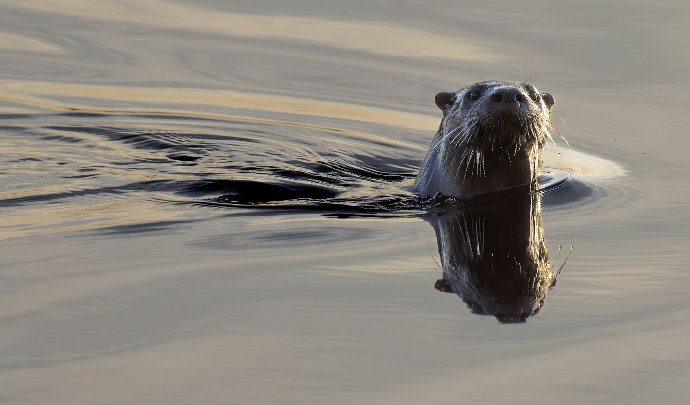
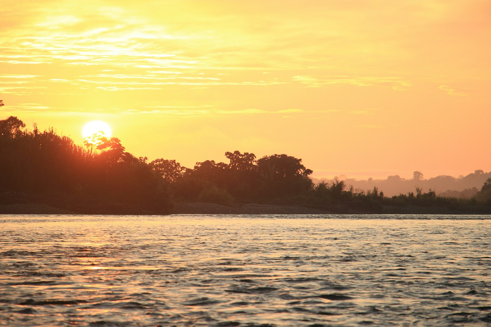
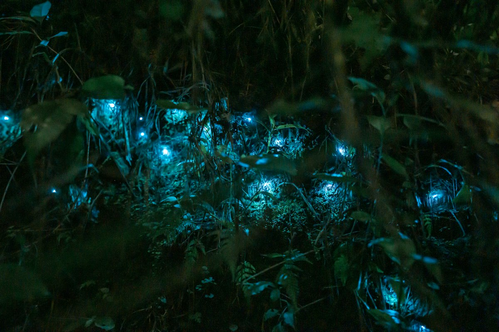

Amazon Field Guide · Wildlife No. 08
Giant Otter: River Wolves Running Out of Water
They bark like dogs, hunt like a team of divers, and once nearly vanished for their velvet fur. Meet the Amazon’s “river wolves”—the world’s longest otters, fighting for clean, connected rivers.

Dawn on an oxbow lake. Mist hangs over brown water. Suddenly a line of sleek heads pops up—then a chorus of barks, whistles, and screams that sounds half dog, half bird. Local people nicknamed them river wolves, and the name sticks. These are giant otters (Pteronura brasiliensis), the Amazon’s most formidable freshwater hunters.
They are the world’s longest mustelids—the weasel family that also includes badgers and wolverines. Adults can stretch to about 1.8 metres; big males weigh more than 30 kilograms. Dense fur traps a layer of air like a wetsuit. Webbed feet and a powerful paddle tail push them through shallows at up to about 14 kilometres per hour. Unlike many otters that prefer twilight, giants are strictly diurnal: they work the day shift.
Family packs on the bank
River wolves do not live alone. Monogamous pairs raise litters inside tight clans of about 4–10 animals. Older siblings babysit. Groups patrol 8–24 kilometres of riverbank, marking latrines and snarling at rival packs. Dens—called holts—are dug into high, vegetated banks with multiple entrances. At midday the family may sprawl on a sandbar like tourists after a swim.
“A repertoire of about 22 distinct calls—from soft peeps to blood-curdling screams—keeps the flotilla together in tea-coloured water.”
Why the river needs its wolves
Fish make up about 90 percent of the diet—cichlids, piranhas, catfish—plus the odd snake, baby caiman, or unlucky bird when stocks run low. Each otter may eat 4–5 kilograms of food a day. By taking mid-level predators and schooling fish, they help keep floodplain food webs from tipping too far one way. Abandoned dens become homes for turtles and kingfishers. Nutrient-rich latrines fertilise bankside plants. Scientists sometimes call them freshwater “engineers.”
Yet the chorus is quieter than it used to be. The IUCN lists giant otters as Endangered, with perhaps only 3,000–5,000 left. A twentieth-century pelt trade took an estimated 30,000 skins; the species vanished from Argentina and most of Uruguay. Today mercury, nets, and dug-up riverbanks threaten the survivors.
How a river-wolf hunt works
- Launch the flotilla. At dawn the clan leaves the holt, lines up submarine-style, and sweeps the shallows together.
- Talk through the silt. Dozens of calls keep hunters spaced and moving as a team when the water is too dark to see far.
- Feel the fish. Sensitive whiskers (vibrissae) read pressure waves from prey even in tannin-stained channels.
- Twist and seize. Lightning head-turns and sharp teeth catch fish; pack tactics can boost catch rates several times over hunting alone.
Five things that make a giant otter a survivor
- A long paddle tail and webbed feet for fast underwater sprints.
- Short outer fur that cuts drag, plus dense under-fur that traps warm air.
- Whiskers that “see” fish by feeling water movement in murky channels.
- Cooperative hunting that corrals shoals better than a lone hunter ever could.
- Strong family bonds—babysitters, shared defence, and loud warnings at trespassers.

Trouble ahead—and reasons to hope
Riparian forest cleared for cattle, soy, or oil palm uproots den banks. In Peru’s Madre de Dios region, gold dredges chewed through tens of thousands of hectares of river habitat in a single decade. Mercury from mining shows up in otter hair at levels that can double safe thresholds for mammals. Fishers who blame otters for empty nets sometimes shoot or poison whole families. Dams and dredging disconnect oxbow lakes so young starve when fish routes vanish. Even noisy tourist boats can interrupt nursing cubs, and diseases from domestic dogs spread where lodges ignore buffer rules.
Conservation groups are mapping the waterways. A Wildlife Conservation Society consortium identified 22 priority river mosaics for cross-border protection—covering about 30 percent of the otter’s remaining range. In places such as Manu Biosphere Reserve, fishing quotas, mercury-free mining zones, and community rangers who guard den sites have helped numbers rebound. Clean, connected water is the real prize.
Once hunted for velvet pelts, the river wolf now needs fierce human loyalty to match its own family bonds. Secure the banks and the fish, and those unmistakable periscope heads will keep rippling Amazon dawns for generations to come.

Odd facts
Word bank
- Diurnal
- — active mainly during the day.
- Endangered
- — an IUCN category meaning a species faces a very high risk of extinction in the wild.
- Holt
- — a den dug into a riverbank where otters shelter and raise cubs.
- Mustelid
- — a member of the weasel family (otters, badgers, wolverines, and relatives).
- Oxbow lake
- — a curved lake left behind when a river changes course.
- Riparian
- — living or growing along a river’s edge.